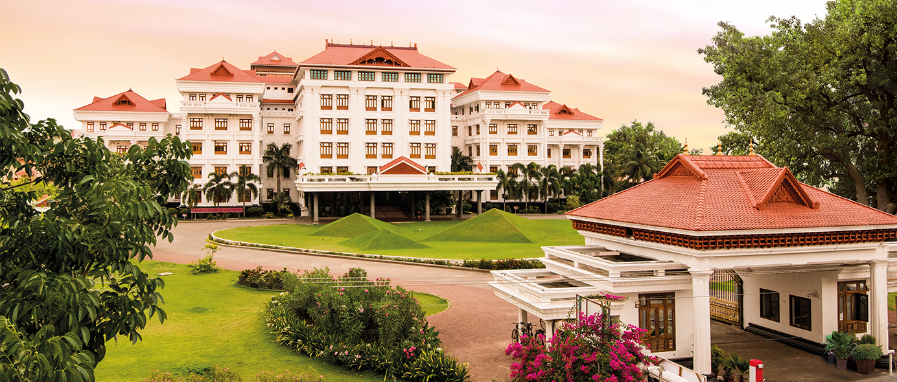

Amrita Vishwa Vidyapeetham is a multi-disciplinary, research-intensive private university with a student strength of over 30,000, supported by more than 2,000 faculty members. Accredited with the highest ‘A++’ grade by NAAC, the university offers over 250 undergraduate, postgraduate, and doctoral programs spanning diverse fields, including Engineering, Management, Medical Sciences, Ayurveda, Life Sciences, Physical and Agricultural Sciences, Law, Arts & Humanities, and Social & Behavioral Sciences.
Contact Us:
Email:campus@am.amrita.edu
Phone: 18004258324
